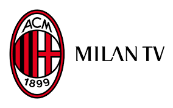

En el sector del cine, entre las películas dedicadas al equipo rossoneri se encuentran Gli eroi della domenica (1953) del director Mario Camerini, donde narra un partido de fútbol de los rossoneri, de una mujer en peligro y un intento de corrupción. En la película aparecen muchos de los jugadores del A. C. Milan de la época, como Lorenzo Buffon, Carlo Annovazzi y todo el Gre-No-Li, además del entrenador Lajos Czeizler. En otra película titulada Audace colpo dei soliti ignoti de Nanni Loy (1959), un grupo de matones romanos se dirigen a Milán fingiendo seguir al equipo giallorosso (A. S. Roma), con la intención de llevar a cabo un robo en la furgoneta del Totocalcio.
Luego hay una película de 1982 de Enrico Vanzina, Eccezzziunale... veramente, en la que Diego Abatantuono interpreta a un hincha del Milán, Donato Cavallo el "ras della Fossa". Lo mismo en su secuela del 2006, Eccezzziunale veramente - Capitolo secondo... me, de nuevo por Vanzina. En 1989 Massimo Boldi, en Fratelli d'Italia, interpreta a un fanático del Milán, obligado a emprender un viaje aventurero en coche junto a dos peligrosos ultras giallorossi, Romolo y Remo, recién liberados de prisión, interpretados por Angelo Bernabucci y Maurizio Mattioli. Los mismos actores, con roles similares, aparecieron más tarde en Tifosi, una película de 1999.
En el ámbito musical, el popular cantautor, Adriano Celentano mencionó a Milán en la canción de 1968, Eravamo in 100.000, Io dell'Inter, lei del Milan. En 1979 Lucio Dalla rindió homenaje al título conseguido de la Champions League 1963 luego de vencer a Benfica, Poi Milan e Benfica, Milano che fatica. Mientras el gran aficionado rossoneri Enzo Jannacci recordaba, en la canción de 1974, Vincenzina e la fabbrica, temporadas sometidas con «zero a zero anche ieri 'sto Milan qui, 'sto Rivera che ormai non mi segna più». También recordamos al actor Umberto Smaila, quien escribió e interpretó en 1987 el himno del Milan Ultras Canto Rossonero y Laura Pausini, reinterprete del Milan, Milan, quien hizo un dueto con Carlo Ancelotti en el Estadio San Siro para celebrar la victoria de la Champions League 2007.
La popularidad del A. C. Milán en las redes sociales es amplia: al 11 de enero de 2016 le seguían 24,7 millones de seguidores en Facebook, 3,1 millones en Twitter y 1,9 en Instagram, ocupando el primer lugar en Italia y el octavo a nivel mundial; el club también cuenta con alrededor de 300,000 suscriptores de YouTube y más de 5 millones de fanáticos en Google+
El 16 de diciembre de 1999, para celebrar el centenario de la fundación del club, nació Milan Channel, un canal de televisión de pago temático que emite continuamente noticias y eventos centrados en el "mundo de Milán". El 1 de julio de 2016 el canal cambia de nombre a Milan TV, renovando gráficos y logotipos. Temas similares también se difunden a través de MilanTime, la televisión web oficial del equipo rossoneri, que se transmite a través del sitio web oficial del club. De manera más general, la distribución de contenido se lleva a cabo a través de una plataforma integrada de un solo entorno, incluyendo social, web y móvil, lanzada en 2010 con el proyecto Milan Media Factory. Entre las emisoras de radio se encuentran "Radio Italia", la radio oficial del club, y la radio deportiva Radio MilanInter, cuyas retransmisiones están dedicadas a los dos equipos milaneses.
En el campo editorial Forza Milan! durante más de medio siglo fue la revista oficial del equipo, fundada en 1963 por el periodista Gino Sansoni y publicada por Panini. Dedicado íntegramente a los acontecimientos del club, bajo la dirección de Gigi Vesigna alcanzó una tirada mensual de 130.000 ejemplares.